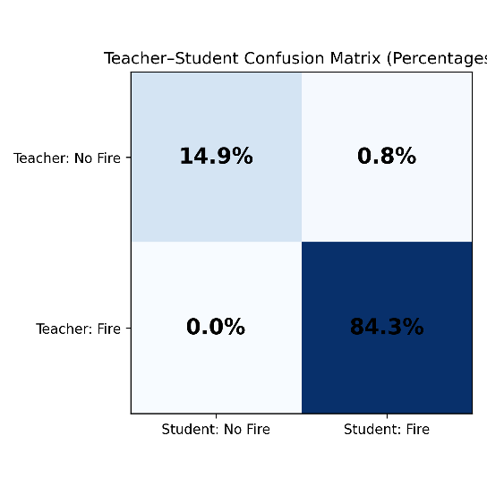

Live Fire Segmentation
A real drone, a Jetson, and a live view of the CoDrones student model thinking in real time.
1 About
A live-inference companion to the CoDrones research project: a real drone's camera feed streams to an onboard Jetson, which runs the same lightweight teacher-student fire-segmentation model, CPU-only, and streams the inference back live. There's no pre-recorded footage here — visitors watch the actual model reason about whatever the drone is pointed at, in real time.
0.685
Teacher–Student Dice score
0.747
flip-consistency IoU (prediction stability)
8.13 FPS
CPU-only inference, 123 ms/frame
2 From the paper
The same annotation-free teacher-student pipeline powers this live stream — trained without a single manually-labeled frame.


3 Watch live
Open Live Stream →
Opens the live camera + inference feed in a new tab.